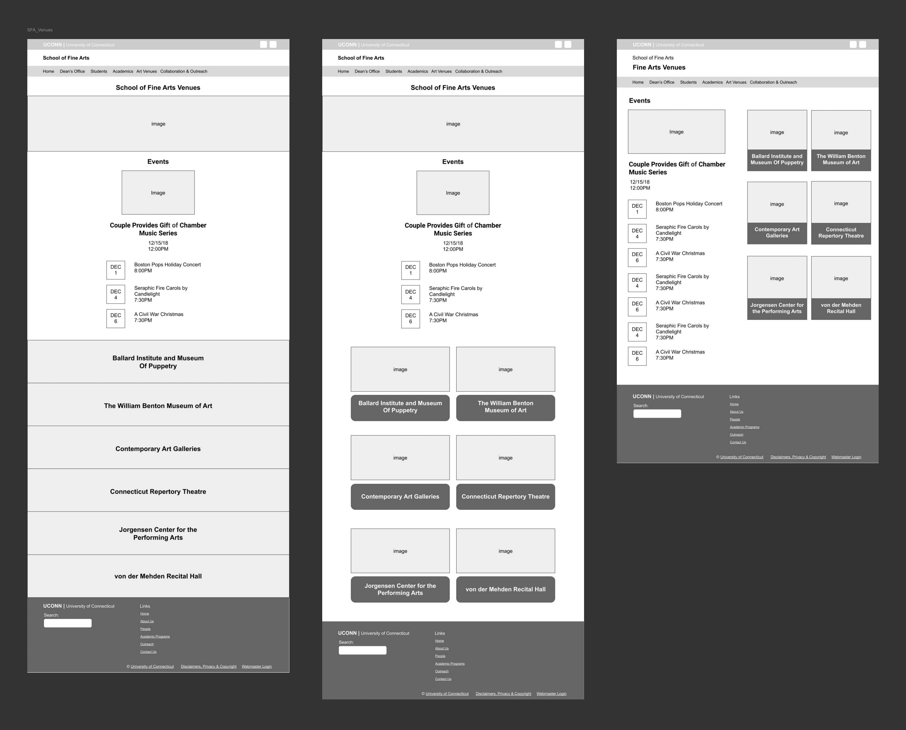

School of Fine Arts
Venue Page
Type
1 Lead Web Designer/developer and a web designer and developer
Project Aspects
Ideation, design, concept presentation
My Role
I took lead in the UI design, converting our wireframes into high-fidelity screens.
I then used assets from the designs to create an animated wallkthrough of the UI for our 90 second demo.
Timeline
December – January (1 month)
Introduction
The University of Connecticut hosts a plethora of events each week. To find out more about these events, a person would have to go on each individual fine arts website to look at their calender. Because of the difficulty of finding events, the Web Dev team was requested by the Fine Arts Department to create a Fine Arts Venue section for the “MyUConn App” to showcase these events. The myUConn app is downloaded by over 10,000 students on android devices and many more on IOS. This function would be accesible to everyone with the app and also on desktop.
Goal/Objective
Our goal was to make information about events more accessible and readily available.
Before, students would have to either go on different sites individually to find out more information or to find out about events through social media. Because of this, the turnout to the events aren’t as high as it possibly could be and many people end up not hearing about events.
User Research
This is an app
This is an app that will primarily be used on mobile devices, but can also be accessed through desktop. I met with a few students and asked some questions:
-How did you usually find out about events around campus?
-Have there ever been times where you were misinformed about an event?
-Have you ever heard about events from social media? If so, what apps?
-Do you have people you know within the fine arts community?
Afterwards, I crafted a user persona that addresses the answers I received. Fine art students and those who are interested in fine art events agreed they wanted an app that would be easy to navigate and straight to the point without other confusing elements.
Early Wireframes:

I wireframed some potential ideas for both mobile and desktop, exploring different possible layouts and possible ways to organize information. After wireframing, I came to realize that the way I initially designed the buttons made the content too crammed and made it hard for the user to select one. It was important to keep accessibility in mind, so I decided to make it stacked so the buttons could be larger.
Since we were using Aurora, a system within Wordpress that the university implemented, we went with their calendar feature as a display to showcase all the events. We also had to keep development and code into mind when designing, as the team only consisted of me and another web designer/developer.
User-Flow Mapping
Conclusion
When designing for the product and looking at the end result and thinking about what came before this, I realized how difficult it was to find events for fine art events. It is such a small part of the university, and as a former fine arts student, I am glad these events were more accessible.
What really helped the flow of this feature was putting the Users needs in mind first. Finding events shouldn’t have to take any longer than a minute. Some key highlights and aspects are:
a. Straightforward user flow
We didn’t want to make it as simple and straightforward as possible so users don’t have to spend so long finding information. There is a home page that features all of the fine arts department and an individual page for each one containing all their upcoming events.
b. Simple UI/Page layout
The main goal and function of the site was to make this information easily accesible. With a
straightforward layout, users can easily spot when events are taking place and easily
access the portal to buy tickets.
What I learned from this project is less is more. The simpler the page layout and navigation, the more time you save for your users who are trying to find the information they need.